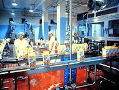
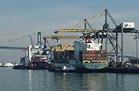

|
The agri-food industry employs one in five Canadians and contributes $60 billion to the GDP annually. Food careers cover a wide array of jobs from production, through processing into distribution and marketing. The following list has been put together by the Institute of Food Science & Technology of the United Kingdom to show broad classes of career opportunities.
Agrologist CareersUnder The SASKATCHEWAN Agrologists Act, B.S.A. graduates who "Practise Agrology" are required to be members of the Saskatchewan Institute of Agrologists. Similar legislation exists in other provinces. Saskatchewan has over 1,000 professional agrologists serving the agriculture industry in animal and crop science, horticulture science, environmental assessment, land use, soil conservation, food processing, regulatory compliance and business management.
Food Science Careers Job opportunities for Food Science graduates are plentiful and varied. Food scientists may be found in food processing plants throughout the nation. These graduates are involved in quality control, new product development or plant management. Federal and provincial governments have a growing need for food scientists to assist in interpreting and implementing regulations concerning food processing and safety. Many developing countries are seeking trained food scientists to assist them in building a food processing industry. Good opportunities exist for qualified students to pursue post-graduate training. Such training can lead to employment in universities, federal agencies and in business. Saskatchewan's food industry employs over 8000 people and is dominated by meat production and processing. New industries involving value-added processing and biotechnology are starting to grow.
Agri-Food Employers The crop and livestock production industry offers many opportunites for both high school and university graduates. The hog industry, in particular is poised for a major expansion. Jobs also exist in marketing Saskatchewan products for home consumption and export. Saskatchewan's food industry employs over 8000 people and is dominated by meat production and processing. New industries involving value-added processing and biotechnology are starting to grow.
University of Saskatchewan
|